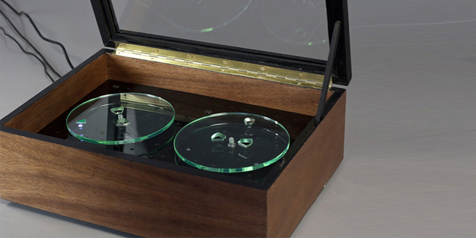

Memory Recorder by product designer Christopher McEwan, revolves around the every day hardships we have at home, the ups and downs of life and the times families have together. Every year memories are recorded through images and videos but the memory recorder creates a way that goes back to using sound to add history to an environment in and out of the home, by capturing memories in audio format.